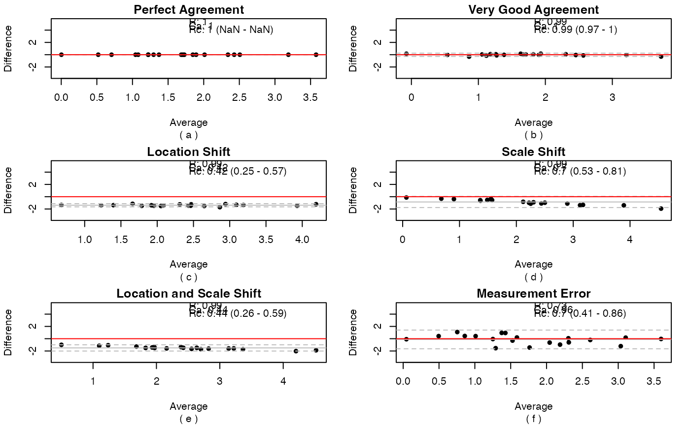

Plotting function for reliability measure.
CCplot( method1, method2, Ptype = "None", metrics = FALSE, xlabel = "", ylabel = "", title = "", subtitle = NULL, xrange = NULL, yrange = NULL, MArange = c(-3.5, 5.5) )
| method1 | measurements obtained in batch 1 or using method 1 |
|---|---|
| method2 | measurements obtained in batch 2 or using method 2 |
| Ptype | type of plot to be outputted c("scatter", "MAplot") |
| metrics | if |
| xlabel | x-axis label for scatterplot |
| ylabel | y-axis label for scatterplot |
| title | title for the main plot |
| subtitle | subtitle of plot |
| xrange | range of x axis |
| yrange | range of y axis |
| MArange | MA range |
Either a scatterplot or MA plot showing concordance correlation.
Aline Talhouk
Aline Talhouk
# Simulate normally distributed data set.seed(12) a1 <- rnorm(20) + 2 a2 <- a1 + rnorm(20, 0, 0.15) a3 <- a1 + rnorm(20, 0, 0.15) + 1.4 a4 <- 1.5 * a1 + rnorm(20, 0, 0.15) a5 <- 1.3 * a1 + rnorm(20, 0, 0.15) + 1 a6 <- a1 + rnorm(20, 0, 0.8) # One scatterplot CCplot(a1, a2, Ptype = "scatter")m2 <- list(a1, a2, a3, a4, a5, a6) mains <- c("Perfect Agreement", "Very Good Agreement", "Location Shift", "Scale Shift", "Location and Scale Shift", "Measurement Error") subs <- letters[1:6] par(mfrow = c(3, 2), mar = c(5.1, 4.1, 1.5, 1.5)) # Scatterplots mapply(function(y, t, s) CCplot(method1 = a1, method2 = y, Ptype = "scatter", xlabel = "X", ylabel = "Y", title = t, subtitle = s), y = m2, t = mains, s = subs)#> [[1]] #> NULL #> #> [[2]] #> NULL #> #> [[3]] #> NULL #> #> [[4]] #> NULL #> #> [[5]] #> NULL #> #> [[6]] #> NULL #># MAplots and show metrics mapply(function(y, t, s) CCplot(method1 = a1, method2 = y, Ptype = "MAplot", title = t, subtitle = s, metrics = TRUE), y = m2, t = mains, s = subs)#> [,1] [,2] [,3] [,4] [,5] [,6] #> Rc 1 0.99 0.42 0.70 0.44 0.70 #> Ca 1 1.00 0.42 0.70 0.44 0.96 #> R2 1 0.99 0.99 0.99 0.99 0.73